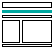
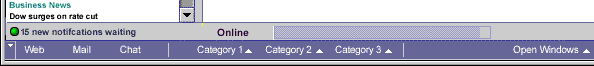
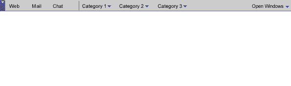
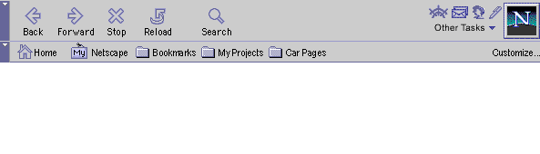
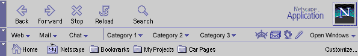
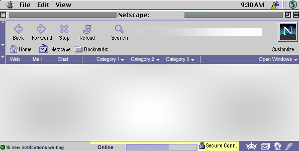
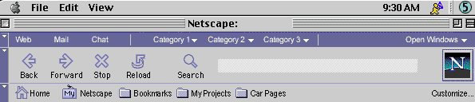
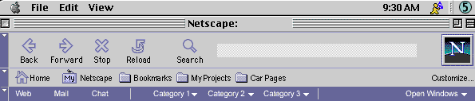
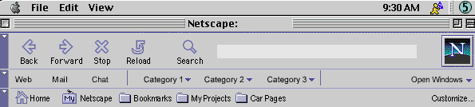
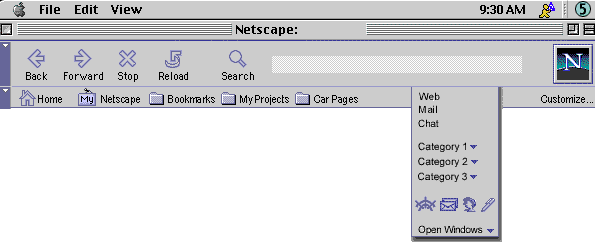

| Communicator Seamonkey cross components |
UI Specification
|
|
Communicator Task Bar send feedback to the component specific newsgroup |
Last
Modification:
|
| Author
German W. Bauer Initial Creation Date: 08 February 1999 |
Status: Implemetable spec, exact co ntent and names of the category folders/popdowns is dynamic. Initial default TBD |
What's
related :
Design Overview |
Feature
Team |
Older spec, will be updated |
Summary/Overview
The task bar will be the place in Communicator Seamonkey where users launch or switch tasks, applications or net based services. In additions the Menu Framework specification will also offer a Tasks menu (formerly Communicator menu) that lets users access applications and services.
Goals for our end users
Provide a "portable" access point to and easy discovery of applications and services outside the current task context. Use the same consistent location throughout all applications.Target Audience
The target user for this feature are Communicator Seamonkey users as described in the Seamonkey PRD, but especially users new to either Navigator or Netcenter.
User Tasks
Fundamental Tasks Intermediate Tasks Advanced Tasks Start core browsing, email or chat activities from within everywhere of the product. Easily switch between open/running windows and tasks Discovery of available Netcenter services Collapse task bar if real estate is needed Reconfigure items in task bar
Design
Cheat sheet

Design
Details
Overview of component groups in the task bar
Related: check out the PM document with a more detailed description on task bar contents etc.|
|
"Extensible services area" |
|
|||
| Component |
|
|
QwikApps Launcher |
|
|
| Purpose | Users will have access to our core level applications such as email, browsing and potentially chat (possibly falling under "people") | Expose Users to second-level functionality grouped under meaningful user-termed categories | One-click access to 3-4 core apps in Communicator. Some small-form-factor apps may use this as a substitute for the bulkier full taskbar. |
|
|
| Presentation |
|
|
small space-saving icons Total number of quick access buttons may not exceed 5 |
|
|
| Contents |
|
|
just the core apps (behaves like 4.5 task bar) |
|
|
| Can
be removed? (prelim thinking) |
|
|
no, except for by advanced end users |
|
|
| who
can add to/update it? (prelim thinking) |
|
|
Items cannot be added to it from outside |
|
|
|
|
|
|
components are already represented in C5 menu |
|
The aforementioned Tasks menu (formerly known as Communicator menu) may look like this
Content presentation
Recommended Approach A: Combination
One-click buttons for core applications, folders/popdowns for non-core services

the following approaches were also considered (click on image to see real scale):
Approach B: Breadth Priority
folders/popdowns for all apps and services
{kind=link}
Approach C: Quick Access Priority
One-click
icons for quick access to core applications, on folder for all other services

{kind=link}
Approach D: Combined Design
folders/popdowns
for all apps and services along with one-click icons for quick access to core
applications

{kind=link}
Layout of Taskbar functionality
below the status
bar (favored approach)
the following approaches were also considered (click on image to see real scale):
combined
task bar with quick access icons at lower right corner of each window.

{kind=link}
above all toolbars
visually separated

{kind=link}
below all toolbars
visually separated

{kind=link}
between toolbars
visually integrated

{kind=link}
as a floating
palette

{kind=link}
Open Issues
- Net2phone button integration
Menus & Preferences
Context Menus
The will be specific items here to get at the properties of the task bar for
advanced users with the ability, as well as to let the user reset the bar to
the 'factory default
Preferences
No specific prefs are expected at this point in time. Most configuration is done through either Netcenter or by advanced users using a context menu "Properties" dialog.Error Messages and Dialogs
Condition Message User Choices
Archived Documents
Revisions
Rev 1: first stab, based on UI design docs
Rev 2: added new concepts for layout, bringing back the 4.5 taskbar in bottom right corner as an idea (some feedback was received that users rely on it for quick access)
Special Notes
|